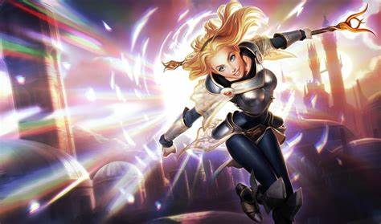

리그 오브 레전드 입문 가이드
게임 설명
리그 오브 레전드는 라이엇 게임즈(Riot Games)에서 만든 5 대 5 팀 전략 게임입니다.
플레이어는 서로 다른 특성을 가지고 있는 170여가지의 챔피언이라는 캐릭터를 하나 선택해서, 상대 팀과 전투를 벌입니다.
- 기본 장르: MOBA (Multiplayer Online Battle Arena)
- 출시일: 2009년
- 인원수: 한 게임당 총 10명 (5명씩 두 팀)
게임의 승리 조건
- 상대 팀의 넥서스(Nexus)를 먼저 파괴하면 승리!
넥서스는 각 팀의 기지 안쪽에 있는 핵심 건물입니다.
넥서스를 부수기 위해선 적의 1차 포탑, 2차포탑 등 방어 건물들을 모두 제거해야만 넥서스 파괴가 가능해집니다.
게임의 전체적인 진행 방식
① 게임 시작 전 (챔피언 선택)
각자 챔피언을 하나씩 선택합니다.
챔피언마다 역할과 스킬이 다릅니다.
예: 딜러, 탱커, 서포터, 암살자 등
② 라인 배치 (초반)
맵은 크게 3개의 길(라인)으로 나뉘어 있습니다.
| 라인명 | 설명 |
|---|---|
| 탑(Top) | 윗쪽 길 – 보통 혼자 가는 경우 많음 |
| 미드(Mid) | 가운데 길 – 혼자 가고 중요 포지션 |
| 봇(Bot) | 아래쪽 길 – 보통 2명이 함께 감 (원딜+서포터) |
| 정글(Jungle) | 라인 사이 공간 – 몬스터를 사냥하며 맵 전체를 돌아다니는 역할 |
③ 라인전 (초반~중반)
각자 라인에서 싸우고(라인전) 미니언(자동으로 나오는 병사)을 처치하며 골드(재화)를 벌고 레벨업을 합니다.
돈으로 아이템을 사서 챔피언을 강화할 수 있습니다.
④ 한타 & 오브젝트 싸움 (중반~후반)
서로 모여서 싸우는 팀 전투(한타)가 벌어집니다.
용(드래곤), 전령, 바론 같은 강력한 몬스터(오브젝트)를 차지하려고 경쟁합니다.
이걸 먹으면 팀 전체에 강력한 버프가 생깁니다.
⑤ 타워 밀기 & 넥서스 파괴 (후반)
적의 방어 건물(타워)을 부수고,
결국 넥서스까지 밀고 들어가 파괴하면 게임에서 승리합니다.
가렌(Garen)-탑
가렌은 주 포지션 탑으로 탱킹과 딜이 평타 이상인 챔프입니다.
상대에게 다가가서 데미지를 입히는 근거리 챔피언으로 기본 공격만으로도 큰 피해를 줄 수 있어 초보자들이 다루기 쉽습니다.
주요 스킬:
- Q - 결단: 다음 공격이 강화되어 침묵 효과 부여
- W - 용기의 심장: 방어력과 마법 저항력 증가
- E - 심판: 회전하면서 주위 적들에게 피해
- R - 데마시아의 정의: 체력이 낮은 적을 마무리 일격
추천 이유:단순한 스킬 조합, 탱킹 능력, 높은 생존력
애쉬(Ashe)-원거리 딜러(AD)
에쉬는 초보자가 하기 좋은 원딜 포지션 챔피언입니다.
기본 공격으로 슬로우를 거는 패시브 덕분에 적 추적에 유리하며, 궁극기(R)는 전장을 넓게 보는데 도움을 줍니다.
주요 스킬:
- Q - 집중 사격: 기본 공격 속도 대폭 증가
- W - 일제 사격: 광역 느려짐 효과가 있는 화살 발사
- E - 매의 시야: 정찰용 매를 날려 시야 확보
- R - 마법의 수정화살: 적을 기절시키는 원거리 궁극기
추천 이유:스킬 구성이 비교적 단순한 편, 원거리에서 딜을 넣어 지속딜에 적응
럭스(Lux)-미드/서포터
럭스는 사거리가 길고 강력한 스킬을 가지고 있는 챔피언입니다.
속박(Q)스킬을 통해 적을 묶을 시 유리한 포지션을 잡을 수 있습니다.
주요 스킬:
- Q - 광채의 속박: 적을 묶는 속박 스킬
- W - 프리즘 보호막: 아군을 보호하는 실드 제공
- E - 광명의 특이점: 범위 폭발과 슬로우 효과
- R - 최후의 섬광: 멀리서 강력한 광선 발사
추천 이유:멀리서 안전하게 적 처치, 적 마무리하기 좋음
말파이트(Malphite)-탑/서포터

말파이트는 높은 방어력과 견고한 생명력을 가진 챔피언입니다.
방어력이 높아 자주 죽는 초보자들에게 좋은 챔피언이기도 합니다.
주요 스킬:
- Q - 지진의 파편: 느려짐과 함께 마법 피해
- W - 천둥소리: 강화된 공격과 방어력 증가
- E - 지진 강타: 주변 적에게 피해 및 공격 속도 감소
- R - 멈출 수 없는 힘: 돌진하며 넓은 범위 기절
추천 이유:간단한 스킬 구성, 높은 생존력
소라카(Soraka)-서포터
소라카는 힐과 방어 스킬이 많아 초보자들이 자주하는 서포터 챔피언 입니다.
롤 플레이에 적응하기 좋은 매커니즘의 챔피언입니다.
주요 스킬:
- Q - 별부름: 범위 피해 및 체력 회복
- W - 은하의 축복: 아군에게 체력을 회복시켜줌
- E - 침묵의 외침: 침묵과 속박을 유발하는 범위 스킬
- R - 기원의 소리: 전 맵 아군에게 체력 회복
추천 이유:단순한 스킬 구성, 전반적인 게임 흐름 적응 유리
기본 게임 용어
전투 관련 용어
- 한타 - 한꺼번에 다 같이 싸우는 전투
- 이니시 - 상대한테 싸움 걸어서 교전 시작하자는 의미
- 갱 - 정글이 라인전 하는 라이너를 도우러 가는 행위
- 로밍 - 라이너가 다른 라인으로 도우러 가는 행위
핑/지도 관련 용어
- 미아핑 - 상대가 라인전 중 라인에서 사라짐(조심하라는 뜻)
- 백핑 - 위험하니까 도망가라는 뜻
- 시야 - 설치된 와드로 확인 가능한 위치 정보
- 부쉬 - 맵에 있는 풀숲들
- 핑와 - 핑크 와드(제어 와드)
- CS - 미니언들 통칭
전략 관련 용어
- 사이드 민다 - 미드를 제외한 탑, 바텀만 파서 포탑을 철거하는 행위
- 옵젝 챙겨라 - 정글에 있는 오브젝트들 먹으라는 뜻
- 스노우볼 - 이득을 계속 굴려서 격차를 벌리는 행위
탑
주요 역할
- 라인 유지 및 맞라인 압박
- 한타 시 진입 또는 상대 딜러 끊기
- 앞라인 형성 (탱커/브루저 역할)
해야할 일
- 초반:라인전 집중, 상대보다 우위 점하기, CS 챙기기
- 중반:텔레포트 활용으로 전맵 개입, 사이 운영
- 후반:한타 때 앞라인 형성 또는 상대 딜러 물기
탑은 고립된 1:1 라인이라 실력차가 뚜렷하게 드러나며, 성장 후 큰 영향력을 가집니다.
정글
주요 역할
- 갱킹으로 라인 개입
- 오브젝트(용, 바론, 협곡의 전령) 관리
- 시야 장악 및 맵 컨트롤
- 한타 때 진입 또는 라인 암살
해야할 일
- 초반:정글 동선 최적화, 갱 타이밍 판단, 오브젝트 체크
- 중반:드래곤/전령 타이밍 관리, 라인 합류
- 후반:진입 각, 궁극기 활용, 오브젝트 먹기
정글은 전략의 중심축이며 팀 전체 성장에 큰 영향을 주므로 판단력이 매우 중요합니다.
미드
주요 역할
- 라인전 승리 및 주도권 장악
- 정글/사이드라인 로밍
- 한타에서 핵심 역할
해야할 일
- 초반:라인 주도권 확보, 정글 도와주기
- 중반:로밍, 시야 확보, 드래곤 교전 참여
- 후반:한타에서 딜 or CC 역할, 포지셔닝 중요
미드는 중앙 허브처럼 다른 라인에 영향력을 미치기 쉬우며, 스킬샷과 판단력이 중요합니다.
원딜
주요 역할
- 주요 딜러 (지속적인 물리, 마법 딜)
- 오브젝트 타격 (타워, 바론 등)
- 후반 캐리 핵심 포지션
해야할 일
- 초반:CS 안정적으로 먹기, 서폿과 협력
- 중반:아이템 파밍, 안전한 위치로 포지셔닝
- 후반:한타에서 생존하면서 딜 최대한 넣기
원딜은 장거리 딜러지만 매우 취약하므로, 서포터 보호와 본인의 포지션이 생명입니다.
서포터
주요 역할
- 원딜 보호 & 라인 관리
- 시야 장악 (와드 설 & 와드 제거)
- 이니시 or 카운터 이니시
- 팀 유틸성 제공 (회복, 보호막, CC 등)
해야할 일
- 초반:와드 설, 원딜 보호, 견제 or 이니시
- 중반:로밍, 시야 장악, 전령/드래곤 준비
- 후반:한타에서 원딜 지키기 or 진입 각 만들기
서포터는 골드 수급은 적지만 전략적 영향력 매우 큰, 게임 전체 판을 조율하는 보이지 않는 지휘자입니다.